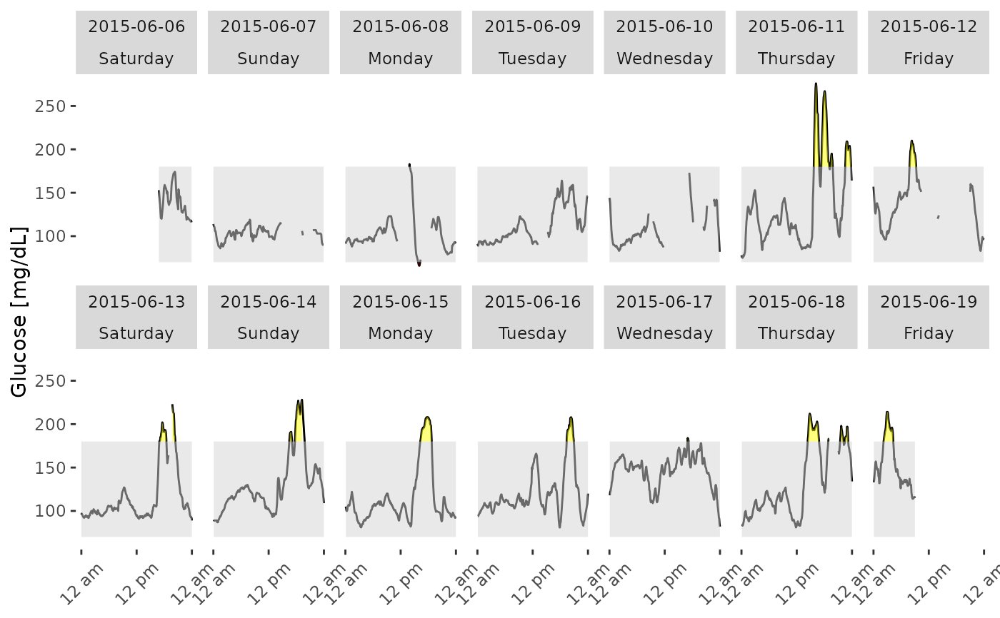
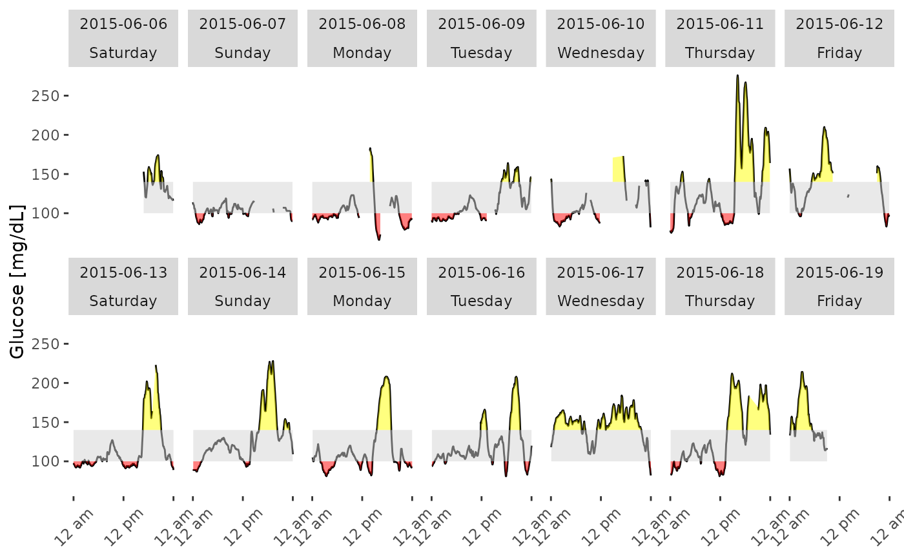

plot_daily.RdThe function plot_daily plots daily glucose time series profiles for a single subject.
plot_daily(data, maxd = 14, LLTR = 70, ULTR = 180, inter_gap = 45, tz = "")
| data | DataFrame with column names ("id", "time", and "gl"). |
|---|---|
| maxd | Number of days to plot, default is the last 14 days, or if less than 14 days of data are available, all days are plotted. |
| LLTR | Lower Limit of Target Range, default value is 70 mg/dL. |
| ULTR | Upper Limit of Target Range, default value is 180 mg/dL. |
| inter_gap | The maximum allowable gap (in minutes). Gaps larger than this will not be connected in the time series plot. The default value is 45 minutes. |
| tz | A character string specifying the time zone to be used. System-specific (see |
Daily glucose time series plots for a single subject
Only a single subject's data may be plotted. The black line shows the glucose values. The shaded gray area shows the target range, default 70-180 mg/dL. Areas of the curve above the ULTR are shaded yellow, while areas below the LLTR are shaded red.
Johnson et al. (2019) Utilizing the Ambulatory Glucose Profile to Standardize and Implement Continuous Glucose Monitoring in Clinical Practice, Diabetes Technology and Therapeutics 21:S2 S2-17-S2-25, doi: 10.1089/dia.2019.0034 .
Elizabeth Chun
plot_daily(example_data_1_subject, LLTR = 100, ULTR = 140)